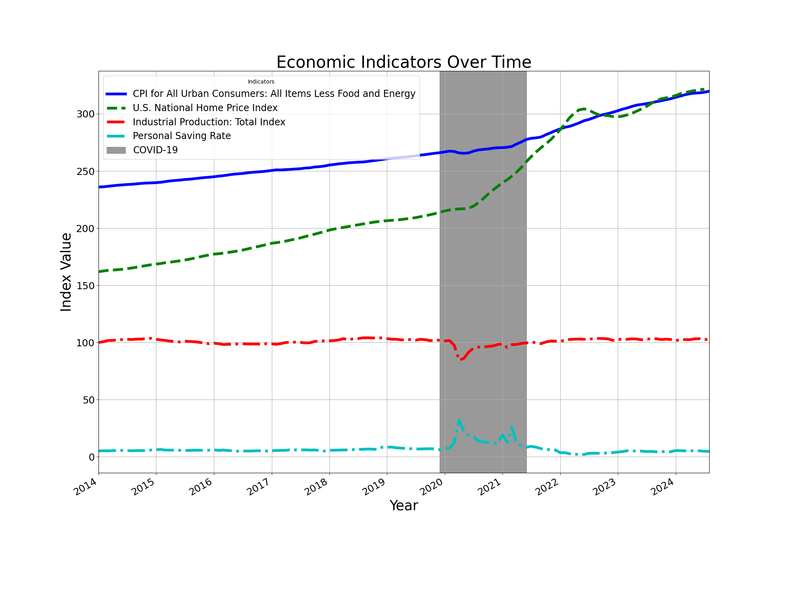

7 Federal Reserve Economic Data - Janice Oenardi
7.1 Week 1 - 08/26 ~ 08/30
7.1.1 Wednesday
7.1.1.1 Cleaning the dataset
Before processing and creating visualizations of the dataset, it is important to prep the dataset by cleaning it. There might be N/A values or outliers in the dataset, which needs to be removed and cleaned to create better and more accurate visualizations.
To clean the data, there are a few things that can be done: - Finding and highlighting NA values by selecting the range of cells and doing ‘Conditional Formatting’ to ‘Highlight Cells Rules’. - Removing NA values by using the ‘Find and Replace’. Find ‘NA’ and replace it with ‘0’. - Using IF function to check for NA values and replace it accordingly. Ex: =IF(A2=“NA”, “0”, A2)
Additionally, upon converting the Swiss dataset from a .csv format into an Excel, the first column of the dataset became combined into one cell.

I fixed the titles that are separated by commas in the one cell by separating the titles into the different respective columns.

7.1.1.2 Context of dataset
Before creating plots and visualizations of the dataset, it is important to know what each title in the columns mead and understand the context of the dataset.
https://stat.ethz.ch/R-manual/R-patched/library/datasets/html/swiss.html
The dataset contains 47 French-speaking “provinces” in Switzerland at around 1888. During that year, Switzerland was entering a demographic transition, where its fertility rates was beginning to fall from the typical level of underdeveloped countries. There are 6 variables in the dataset, where variables are scaled from 0 to 100, except Cathloic that is scaled from 0 to 1. The definitions of the dataset are as below:
- Fertility = common standardized fertility measure
- Agriculture = % of males involved in agriculture as occupation
- Examination = % draftees receiving highest mark on army examination
- Education = % education beyond primary school for draftees.
- Catholic = % ‘catholic’ (as opposed to ‘protestant’).
- Infant.Mortality = live births who live less than 1 year.
7.1.1.3 Creating Different Basic Visualizations
7.1.1.3.1 Scatterplot 1 - Fertility and Cathlic appear to cluster in two groups with four outliers
In creating plots, I utilized Excel’s tool of Recommended Charts, which included a scatterplot of ‘Fertility’ and ‘Catholic’. The scatterplot shown below shows two groups of cluster with four outliers.

As shown in the scatterplot, provinces with higher percentage of Catholic people seem to have a slightly higher fertility compared to provinces with low percentage of Catholic people.
7.1.1.3.2 Scatterplot 2 - Relationship between infant mortality and percentage of Catholic people in a province
 Based on the scatterplot above, infant mortality and Catholic appear to have no apparent relationship. However, provinces with higher percentage of Catholic population appear to has a slightly higher infant mortality, with a few provinces having 25 and more live births in a year. Meanwhile, the provinces with a low percentage of Catholic population appear to have infant mortality mostly in the 15-25 range.
Based on the scatterplot above, infant mortality and Catholic appear to have no apparent relationship. However, provinces with higher percentage of Catholic population appear to has a slightly higher infant mortality, with a few provinces having 25 and more live births in a year. Meanwhile, the provinces with a low percentage of Catholic population appear to have infant mortality mostly in the 15-25 range.
Aside from that, the provinces in Swiss appear to have either a very high percentage of Catholic population or a very low percentage of Catholic population, with the scatterplot showing two clusters on the lower end of Catholic percentage (0-20%) and a higher end of Catholic percentage (80-100%). What do you observe?
7.1.1.3.3 Bar Charts
 As mentioned in the discussion above, the provinces in Swiss appear to have either a very high percentage of Catholic population, or a very low percentage of Catholic population. The bar chart shows a high frequency within the 2.15-7.15% of Catholic population that gradually decreases as the percentage approaches 17.15-22.15 and gradually increases again as it approaches the 87.15-92.15 percentage of Catholic population. The bar chart above better visualize the two groups of highly populated Catholic province or lowly populated Catholic province.
As mentioned in the discussion above, the provinces in Swiss appear to have either a very high percentage of Catholic population, or a very low percentage of Catholic population. The bar chart shows a high frequency within the 2.15-7.15% of Catholic population that gradually decreases as the percentage approaches 17.15-22.15 and gradually increases again as it approaches the 87.15-92.15 percentage of Catholic population. The bar chart above better visualize the two groups of highly populated Catholic province or lowly populated Catholic province.
7.1.1.3.4 Line Chart
 The line chart above clearly shows that there is a direct relationship between examination and education. As the percentage of education beyond primary school for draftees increases, the percentage of draftees receiving highest mark on army examination also increases. The two variables showcase a positive directly correlated relationship. Aside from that, the graph also shows that the 46th province outperformed all of the other provinces with the highest percentage of education beyond primary school for draftees and also the highest percentage of draftees receiving highest mark on army examination. The 46th province is followed by the 42th province which has the second highest percentage of education beyond primary school and second highest percentage of draftees receiving highest mark on army examination.
The line chart above clearly shows that there is a direct relationship between examination and education. As the percentage of education beyond primary school for draftees increases, the percentage of draftees receiving highest mark on army examination also increases. The two variables showcase a positive directly correlated relationship. Aside from that, the graph also shows that the 46th province outperformed all of the other provinces with the highest percentage of education beyond primary school for draftees and also the highest percentage of draftees receiving highest mark on army examination. The 46th province is followed by the 42th province which has the second highest percentage of education beyond primary school and second highest percentage of draftees receiving highest mark on army examination.
7.1.1.3.5 Pie Charts
 The pie chart does not really visualize the agriculture data well, as there are too many percentage classification of males involved in agriculture occupation. However, the pie chart can be made better by making the classifications into 5 groups to see which range of percentage of males involved in agriculture occupation is higher among the other provinces.
The pie chart does not really visualize the agriculture data well, as there are too many percentage classification of males involved in agriculture occupation. However, the pie chart can be made better by making the classifications into 5 groups to see which range of percentage of males involved in agriculture occupation is higher among the other provinces.
7.1.1.3.6 Histograms
 The histogram shows a slightly negative skew on the frequency of males involved in agriculture as occupation. The majority of the provinces have males involved in agriculture on the 61.2-71.2% range. The 1.2-11.2% range and the 21.2-31.2% range of males involved in agriculture have the lowest frequency.
The histogram shows a slightly negative skew on the frequency of males involved in agriculture as occupation. The majority of the provinces have males involved in agriculture on the 61.2-71.2% range. The 1.2-11.2% range and the 21.2-31.2% range of males involved in agriculture have the lowest frequency.
7.1.1.4 What plot represent better the data? why?
There isn’t any plot that is more superior that the other, but it wholly depends on the variables being plotted. For instance, the relationship between examination and education can be better represented using a line chart, as a line chart shows a more visible distinction between the variable of examination and education. If using a scatterplot, the many plots in the chart may cause the distinction between the two variables to be less visible, as the two variables are directly correlated and have values very closely to one another.
On the other hand, using a scatterplot can better highlight the two groups of highly-populated Catholic provinces and lowly-populated Catholic provinces better than a barchart. The scatterplot can visualize the two groups of clusters on opposite ends, highlighting there there are two major groups in the Swiss: Catholic heavily-populated province or Protestant heavily-populated province
Therefore,different plots have different uses and can highlight the relationship of some variables better than the other, depending on the context and relationship of the variables being plotted. It is important to explore the different relationships of variables using different charts and plots to better visualize the relationships of the variables in the dataset.
7.1.2 Friday
7.1.2.1 Choosing the source and dataset
- The source that I chose for this class is the Federal Reserve Economic Data (FRED), with the link: https://fred.stlouisfed.org/.
I chose the FRED source because I would like to delve more into the US economy to conduct economic analysis and financial research as a business major. Additionally, there are a lot of different datasets, including from different countries, that I an explore from the source.
- For this assignment, I used ChatGPT to brainstorm on which dataset I should choose from and why.
After using ChatGPT and exploring the source website some more, I decided to choose the dataset containing Corporate Profits by Industry with this link: https://fredaccount.stlouisfed.org/public/datalist/6257. I downloaded the whole data lists, as it all involves the relevant corporate profits of different industries and sub-sectors.

- I think that it would be interesting to visualize how the different industries’ profits vary throughout the years, and whether there are correlations between any industries. I downloaded the dataset as Excel format.
7.1.2.2 Context of the dataset
The dataset contains quarterly data on the corporate profits with inventory valuation adjustment for different industries, including non-financial, financial, federal, and many other sub-categories such as manufacturing, wholesale trade, and utilities. The data is presented in billions of dollars, seasonally adjusted annual rate. To set parameter, the study for this assignment only looks at the 10 year span from first quarter of 2014 to the first quarter of 2024.
7.1.2.3 Cleaning and organizing the dataset
- Replacing Series ID with Titles
The dataset contains columns with Series ID instead of titles. Therefore, it needs to be replaced with the titles, which can be viewed in the other sheet in the same Excel document. - To do this, I copied the first Series ID and paste it on the ‘Find’ tool.

- Then, I go to the other sheet in the same Excel document to find the same Series ID and locate the title

- After locating the title, I copied it and paste it on the dataset sheet to replace the Series ID with the right title.

- Repeat this until all other Series ID are replaced with its title
Making the titles more concise When copy and pasting back the titles to the dataset sheet, I realized that the titles are very long and repetitive. Therefore, I reorganized the title and make it shorter and more concise.
Formatting the columns to be more organized and neat To do this, I expanded the columns to the right width, and centered the text. Additionally, I also deleted the rows with data outside of the 10 year span from 2014 to 2024, as it is outside the parameter of the this exploration.

7.1.2.4 Making Visualizations
In making visualizations, I utilized Excel’s ‘Recommended Charts’ tool under ‘Insert’. After using the tool, I looked over the data and explore to create more meaningful visualizations on my own.
7.1.2.4.1 Line chart: Average Total Profits in 10 Years

When I added a graph from the ‘Recommended Charts’, a new sheet is created along with corporate profits summed into yearly instead of quarterly.

- Total corporate profits increase over the 10 year period.
- There are some significant declines in corporate profits The two major declines occurred in the span of end of quarter of 2019 to end of quarter of 2020. in the late quarter of 2019 to 2020. It is evident that the COVID-19 pandemic caused the sudden drop in corporate profits, with the lock-down, inflation, and slowdown of the economy. The economy healed in the first two quarters of 2020 as the lock-downs are alleviated, however declined again in the end of quarter of 2020.
- The private enterprises’ profits appear to be very steadily increasing from first quarter of 2022 to the first quarter of 2024. The total corporate profits appear to be higher than the average total corporate profits dotted line, signifying that the increase in total corporate profits are quite significant.
7.1.2.4.2 Scatterplot 1: Domestic Industries (Non-financial: Manufacturing) vs. Federal

- “Domestic Industries: Non-financial: Manufacturing” appears to have an inverse relationship with “Federal”
As ‘Manufacturing’ is high at a range of 675-825 billion dollars, ‘Federal’ appears to be on hundreds of billion dollars loss. However, as ‘Manufacturing’ decreases to below 600 billion dollars, ‘Federal’s’ corporate profits improved to a range of 50-125 billion dollars.
7.1.2.4.3 Scatterplot 2: Wholesale trade vs. Transportation and warehousing

- As wholesale trade’s corporate profits increases, the corporate profits in the sub-sector of transportation and warehousing also increases.
The direct and proportional relationship of the two sub-sectors make sense, as wholesale trade involves purchasing goods in large quantities and reselling them in smaller quantities to businesses and other wholesalers, directly involving transportation and warehousing of the goods.
7.1.2.4.4 Barchart: Non-financial vs. Financial Domestic Industry

- The non-financial domestic industry’s corporate profits are growing more significantly compared to the financial domestic industry’s stable corporate profits
The non-financial domestic industry are growing more rapidly, especially in the last half of the decade. The financial domestic industry has over 2500 billions of dollars of corporate profits in the first quarter of 2024. Meanwhile, the financial domestic industry appears to have stable corporate profits throughout the past 10 years, as its corporate profits are varying slightly from year to year and are stuck under 750 billion dollars.
7.1.2.4.5 Piechart: Non-financial makes up the majority of the domestic industry’s corporate profits

- Non-financial domestic industry takes 70% of the domestic industry’s corporate profits, while the rest of the world takes up only 14% of the domestic industry’s corporate profits.
- As stated in a study, non-financial corporations are responsible for a large share of the economic activity in most advanced economies (Tebrake & O’hagan, n.d.), which maakes sense as a lot of the important sub-sectors belong to the non-financial industry (including manufacturing of durable and non-durable goods, wholesale trade, retail trade, utilities, and information)
7.1.2.5 References
Tebrake, J., & O’hagan, P. (n.d.). Understanding Financial Accounts The financing of non-financial corporations. Retrieved August 31, 2024, from https://www.oecd-ilibrary.org/docserver/9789264281288-8-en.pdf?expires=1725145368&id=id&accname=guest&checksum=CE2ED779ABF58E8BEB69C041927BC309
7.2 Week 2 - 09/02 ~ 09/06
7.2.1 Wednesday and Friday Work
7.2.1.1 Context of data set
I am using the ‘airquality’ data set, which is the daily air quality measurements in New York from May 1, 1973, to September 30, 1973. The format is a data frame with 153 observations on 6 variables:
- Ozone: numeric Ozone (ppb)
- Solar.R: numeric Solar R (lang)
- Wind: numeric Wind (mph)
- Temp: numeric Temperature (degrees F)
- Month: numeric Month (1–12)
- Day: numeric Day of month (1–31)
Details:
Ozone: Mean ozone in parts per billion from 1300 to 1500 hours at Roosevelt Island
Solar.R: Solar radiation in Langleys in the frequency band 4000–7700 Angstroms from 0800 to 1200 hours at Central Park
Wind: Average wind speed in miles per hour at 0700 and 1000 hours at LaGuardia Airport
Temp: Maximum daily temperature in degrees Fahrenheit at La Guardia Airport.
Source and reference:
The data were obtained from the New York State Department of Conservation (ozone data) and the National Weather Service (meteorological data).
Chambers, J. M., Cleveland, W. S., Kleiner, B. and Tukey, P. A. (1983) Graphical Methods for Data Analysis. Belmont, CA: Wadsworth.
7.2.1.2 Uploading and converting the document
- I downloaded the airquality data set in .csv format from D2L.
- Then, I uploaded it onto Excel.
Since the format is in .csv, I need to change from ‘Viewing’ to ‘Editing’, and convert the Excel into .xlsx format
- Afterwards, I renamed the Excel file and saved it onto the right folder.
7.2.1.3 Cleaning the data set
Before processing and creating visualizations of the dataset, it is important to prep the data set by cleaning it. There might be N/A values or outliers in the dataset, which needs to be removed and cleaned to create better and more accurate visualizations.
To clean the data, I used Excel to clean the data and remove all the rows which as NA values.
Here are the things I did step by step to clean the data set:
- Filtering the data set and checking only the NA values
- Delete the rows with NA values
- Repeat on the other columns
7.2.1.4 Creating visualizations (Charts + Pivot Tables)
7.2.1.4.1 Histogram: Ozone Distribution
The histogram shows a positively skewed (or right-skewed) distribution which most values are clustered around the left tail of the distribution while the right tail of the distribution is longer
The mode of the ozone level is 1-25 ppb.
7.2.1.4.2 Scatter plot: Ozone vs. Temperature
The scatter plot shows an increasing in trend of both variables. It suggests that ozone depend on temperature, but other factors like the day, month, and solar wind also affect temperature.
Ozone and temperature shows a directly related relationship, where the increase in ozone may cause to an increase in temperature.
7.2.1.5 Creating a Pivot Table
- Select the data you want to include in the pivot table
- Create pivot table in a new sheet
3. Drag ‘Month’ into the Rows
4. Drag ‘Day’ into Columns
5. Drag ‘Ozone’, ‘Solar.R’, ‘Wind’, ‘Temp’ into Values
- Explore and drag around the variables in different ways to create more insightful pivot tables
7.2.1.5.1 Pivot Table 1: Average of Variables Summary
Making visualizations in the form of a pivot table allows us to help understand the data set by allowing the data to be presented from another perspective. We can also choose where to put the values on the pivot table to present the data in different ways.

Average Ozone Levels: Peaks in July (59.1) and August (60.0), while May (24.1) and September (31.4) have the lowest levels.
Average Temperature: Highest in July (83.9) and August (83.7), with May (66.5) being the coolest.
Average Wind Speed: Highest in June (12.2) and lowest in July (8.5).
Average Solar Radiation (Solar.R): Peaks in July (216.4), and the lowest in September (168.2).
Overall, July and August show higher ozone and temperature levels. Ozone and temperature levels appear to have a directly proportional relationship, with average ozone increasing in May to August and decreasing in September, and average temperature following a similar upward and downward trend throughout the months.
Average temperature and solar levels appear to also have a directly proportional relationship, as solar directly affects the temperature.
On the other hand, wind speed varies inversely with temperature. Wind speed appears to be increasing from May to June, sharply drops in July, and increasing again in August and September.
7.2.1.6 Pivot Table 2: Temperature
- The pivot table allows us to delve more deeply on the average temperature trend throughout the months and days.
- As seen from the pivot table, the hottest days appear to be on the end of August (August 28 to August 31) to the beginning of September (September 1 to September 4), with the temperature consistently reaching above 90 degrees throughout those days).
- Meanwhile, the coldest days seem to be in early May, with temperature ranging from 58 degrees to 79 degrees.
7.2.1.7 Pivot Table 3: Temperature vs. Ozone, Wind, and Solar
- Solar generally increases with temperature and peaks at temperature 86 lang with an average of 211.6 lang. As seen from the chart, solar fluctuates most significantly among other variables, with values ranging from 20 to 298.5 lang.
- Ozone increases as temperature rises, with notable jumps at 71 degrees (15 ppb), 77 degrees (23 ppb), and peaks at 89 degrees (103.5 ppb).
- The highest average ozone level is 103.5 ppb at 89 degrees in. Meanwhile, ozone appears to be low (<30 degrees) for temperatures below 70 degrees, such as in May and September. This further suggests that ozone and temperature has a directly proportional relationship.
- Wind shows a decreasing trend as the temperature rises. Wind peaks at 18.4 mph for 57 degrees and consistently reduces, reaching as low as 4.3 mph at 93 degrees, which shows that wind and temperature are inversely related.
- Wind has relatively stable values between 6-10 mph for temperatures above 80 degrees.
- Higher temperatures correlate with lower wind speeds and increased ozone levels. Meanwhile, solar has a fluctuating trend and does not show a consistent pattern with temperature changes.
7.2.1.8 Bar chart from pivot table
I selected the pivot table and inserted a bar chart using Excel to visualize the relationship of temperature with solar, ozone, and wind by month. 
Ozone shows a steady increase from May (5) to July (7), peaks in August (8), and then decreases in September (9).
Temperature increases gradually from May (5) to July (7), maintains a similar level in August (8) and September (9).
Wind remains relatively low and stable throughout all months, with slight fluctuations.
Solar peaks sharply in May (5) and July (7), slightly decreases in June (6) and August (8), and remains high in September (9). Solar radiation shows high peaks in May and July.
7.2.1.9 Line chart from pivot table
I selected another pivot table and inserted a line chart using Excel to visualize the relationship of temperature with solar, ozone, and wind.
The pivot table allows us to look more closely on the effect of temperature on the other variables (ozone, wind, and solar).
As seen on the pivot table and the line chart, the solar levels fluctuate the most among the other variables and seem to generally increase as temperature approaches 97.
Besides that, ozone follow a similar upward trend as temperature increases, suggesting a directly proportional relationship.
Additionally, wind appears to be inversely related with temperature, as it decreases when temperature approaches its maximum.
7.2.1.10 Findings and takeaways
What and how does the findings pertains to our overall project objective?
- The findings in this assignment allowed me to learn that making visualizations are not just about making different kinds of charts, but also can be in the form of tables -in this case, pivot tables.
- Pivot tables are important and can be used strategically to present data from a new set of perspectives by arranging, formatting, and organizing the data in different rows, columns, and values. By presenting the data in a more organized way, we can draw more analysis and correlations of how different variables relate to one another in the data set.
- Making a more insightful and in-depth analysis of the data set requires a deep exploration by trying to plot data in different ways, formatting them differently (ex: adjusting the min/max values or the bin range of a chart),
I will incorporate the findings from this assignment into the mid-term project, to allow a better exploration and analysis of the FRED data set. Specifically, aside from making different charts (scatter plots, distribution, line chart, etc.), I will also deeply explore the data set variables through pivot tables. Pivot tables allow us to see the data in a different dimension, which is more concise and summarized for better comprehension. As the FRED data set is huge, pivot tables would be very useful in effectively visualizing and finding meaningful correlations and analyses of the variables.
7.2.2 Midterm Project Context
7.2.2.1 Choosing the source and dataset
The source that I chose for this class is the Federal Reserve Economic Data (FRED), with the link: https://fred.stlouisfed.org/
I chose the FRED source because I would like to delve more into the US economy to conduct economic analysis and financial research as a business major. Additionally, there are a lot of different data sets, including from different countries, that I an explore from the source.
7.2.2.2 Context of the FRED data source
The FRED (Federal Reserve Economic Data) data set contains various economic indicators from the U.S., such as employment statistics, inflation rates, GDP data, and other key economic variables. Here’s a breakdown of the context of this data set:
7.2.2.2.1 Variables
As the FRED source contains a lot of different datasets, here are only some of the variables included in the dataset source.
- GDP (Gross Domestic Product): A measure of the total economic output of a country.
- Unemployment Rate: The percentage of the labor force that is unemployed but actively seeking work.
- Inflation Rate (CPI or PPI): The rate at which the general level of prices for goods and services is rising.
- Interest Rates: Such as the Federal Funds Rate, which is the interest rate at which banks lend to each other overnight.
- Industrial Production Index: A measure of the real output of the manufacturing, mining, electric, and gas industries.
- Retail Sales: A measure of the total sales within the retail sector.
- Housing Starts: The number of new residential construction projects that have begun in a given period.
- Consumer Confidence Index: A measure of consumer sentiment about the economy.
- Exports and Imports: The total value of goods and services exported and imported by a country.
7.2.2.2.2 Who collected the data
The data is collected by various U.S. government agencies such as:
The U.S. Bureau of Labor Statistics (BLS)
The U.S. Bureau of Economic Analysis (BEA)
The Federal Reserve Board
The U.S. Census Bureau It is then compiled and made available to the public by the Federal Reserve Bank of St. Louis via the FRED platform.
7.2.2.2.3 Purpose of the source and data set
7.2.2.2.3.1 The primary purpose of the FRED data set is to provide economic data that can be used for:
Economic Research and Analysis: By economists, policymakers, and academic researchers to understand economic trends and conditions.
Policy Making: By government agencies and the Federal Reserve to inform monetary and fiscal policy decisions.
Market Analysis: By financial analysts and investors to forecast economic conditions and make informed decisions.
Education: As a resource for students and educators in understanding economic principles and trends.
7.2.2.2.3.2 There are several objectives/purposes of the data set that can be relevant fo the mid-tern project. I can delve into the economic indicators over time, such as:
GDP Growth Rate: To observe economic expansion or contraction.
Unemployment Rate: To identify periods of high or low employment.
Inflation Rate: To detect inflationary or deflationary trends.
Interest Rates: To understand changes in the cost of borrowing.
7.2.2.2.3.3 For comparative analysis, I can also use bar charts, line charts, scatter plots, pivot charts, and other visualizatioons to compare different indicators:
Interest Rates vs. Inflation Rates: To show the relationship between monetary policy and inflation.
GDP vs. Unemployment Rate: To show how economic output correlates with employment levels.
Consumer Confidence vs. Retail Sales: To visualize how sentiment aligns with spending behavior.
7.2.2.2.3.4 For a deeper exploration using the source and data set, I can also create sector-specific visualizations to focus on specific sectors such as manufacturing, housing, or consumer spending:
Industrial Production Index: To visualize the output of key industries.
Housing Starts: To visualize the health of the real estate sector.
Retail Sales by Category: To understand consumer spending patterns.
7.2.2.2.3.5 I can create geographical visualizations from different countries that the data set including:
Unemployment Rates by Country: To visualize regional differences in employment.
GDP Growth by Country: To compare economic performance across different areas.
Additionally, I can delve into leading and lagging Indicators by visualize leading indicators (like consumer confidence) against lagging indicators (like GDP) to understand potential future economic conditions.
7.3 Week 3 - 09/09 ~ 09/13
7.3.1 Wednesday

7.3.1.1 Description
This famous (Fisher’s or Anderson’s) iris data set gives the measurements in centimeters of the variables sepal length and width and petal length and width, respectively, for 50 flowers from each of 3 species of iris. The species are Iris setosa, versicolor, and virginica.
7.3.1.2 Format
iris is a data frame with 150 cases (rows) and 5 variables (columns). The columns are named:
Sepal.Length
Sepal.Width
Petal.Length
Petal.Width
Species
iris3 gives the same data arranged as a 3-dimensional array of size 50 by 4 by 3, as represented by S-PLUS. The first dimension gives the case number within the species subsample, the second the measurements with names Sepal L., Sepal W., Petal L., and Petal W., and the third the species.
7.3.1.3 Source and references
Fisher, R. A. (1936) The use of multiple measurements in taxonomic problems. Annals of Eugenics, 7, Part II, 179–188.
The data were collected by Anderson, Edgar (1935). The irises of the Gaspe Peninsula, Bulletin of the American Iris Society, 59, 2–5.
Becker, R. A., Chambers, J. M. and Wilks, A. R. (1988) The New S Language. Wadsworth & Brooks/Cole. (has iris3 as iris.)
7.3.1.4 Figure 1:
The chart shows the relationship between petal width and petal length for three iris species: setosa, versicolor, and virginica.
Setosa has the smallest petal length and width, clustering around the lower left corner.
Versicolor occupies the middle range of petal length and width, showing a positive correlation between these two variables.
Virginica has the largest petal dimensions, forming a cluster in the upper right corner, also showing a clear positive trend.
There is little overlap between setosa and the other species, but versicolor and virginica have some overlap in their measurements.
7.3.1.5 Figure 2:
Setosa has the shortest average sepal length, smallest petal length, and width compared to the other species.
Versicolor (orange) displays moderate values for sepal and petal length/width, generally in between setosa and virginica.
Virginica has the largest average values for all four measurements (sepal length, sepal width, petal length, petal width).
Sepal width for setosa is the highest among the three species, while virginica has the largest values for both petal length and width.
7.3.1.6 Figure 3:
The boxplot visualizes the distribution of the average petal and sepal dimensions (length and width) across different iris species:
Average Petal Length: Ranges from around 1 to 5, with most data concentrated between 3 and 4.
Average Petal Width: A narrower range from 0.5 to 2.0, with the majority between 1.0 and 1.5.
Average Sepal Length: A wider range, mostly between 5 and 7, indicating greater variation in sepal length.
Average Sepal Width: Ranges between 2.0 and 4.0, with a tighter spread, suggesting less variability.
Overall, petal and sepal dimensions show distinct ranges, with sepal measurements generally larger than petal measurements.
7.3.1.7 Figure 4:
- A deeper analysis of the scatter plot reveals the following patterns and relationships among the three iris species:
Setosa:
This species has a distinct cluster with relatively small sepal lengths (around 4.5 to 5.5) and larger sepal widths (typically 3.2 to 4.4).
The clear separation of this cluster indicates that setosa has distinct structure and form characteristics compared to the other two species.
Versicolor:
Versicolor occupies a middle ground in terms of both sepal length and width. Its sepal lengths range from 5.0 to 7.0, while its widths fall mostly between 2.5 and 3.2.
There is some overlap with virginica, making it less distinct in terms of sepal dimensions. However, it is separable from setosa, especially in sepal width.
Virginica:
Virginica shows the highest sepal lengths, ranging from 6.0 to 8.0, but with sepal widths similar to versicolor (around 2.5 to 3.5).
The overlap in width with versicolor shows that there is some ambiguity between these two species based on sepal dimensions alone, but virginica’s larger sepal length helps differentiate it.
Petal Length (Point Size):
The size of the circles represents average petal length, with larger circles indicating longer petals.
Setosa has the smallest petals on average, as indicated by the small circle sizes.
Virginica has the largest petals, reflected in its larger circle sizes.
Versicolor is in between, with moderate petal lengths.
Inter-Species Overlap:
Setosa is well-separated from the other two species in terms of both sepal length and width, making it easy to distinguish.
Versicolor and Virginica overlap significantly in their sepal width and partially in sepal length. The main distinction between these two species lies in sepal length, where virginica tends to have longer sepals, and in petal length, with virginica showing larger petals.
The chart shows clear separation of setosa from the other species based on sepal dimensions, while versicolor and virginica show partial overlap, making them more challenging to differentiate. Petal length, represented by circle size, is an important additional factor in distinguishing virginica from versicolor.
7.3.2 Friday

7.3.2.1 Context of data set
- The source that I chose for this class is the Federal Reserve Economic Data (FRED), with the link: https://fred.stlouisfed.org/.
- I chose the FRED source because I would like to delve more into the US economy to conduct economic analysis and financial research as a business major. Additionally, there are a lot of different data sets, including from different countries, that I an explore from the source.
- The FRED (Federal Reserve Economic Data) data set contains various economic indicators from the U.S., such as employment statistics, inflation rates, GDP data, and other key economic variables.
- For this assignment, here is the breakdown of the variables in the dataset:
7.3.2.2 Variables
7.3.2.2.1 1. Labor Force Participation Rate
Source: U.S. Bureau of Labor Statistics
Definition: A measure of the total economic output of a country.
Units: Percent
Frequency: Monthly
Description: The labor force participation rate is defined by the Current Population Survey (CPS) as “the number of people in the labor force as a percentage of the civilian noninstitutional population”. The participation rate is the percentage of the population that is either working or actively looking for work.”
The Labor Force Participation Rate is collected in the CPS and published by the BLS. It is provided on a monthly basis, so this data is used in part by macroeconomists as an initial economic indicator of current labor market trends. The labor force participation rate helps government agencies, financial markets, and researchers gauge the overall health of the economy.
7.3.2.2.2 2. Unemployment Rate
Source: U.S. Bureau of Labor Statistics
Definition: The unemployment rate represents the number of unemployed as a percentage of the labor force.
Units: Percent
Frequency: Monthly
Description: Labor force data are restricted to people 16 years of age and older, who currently reside in 1 of the 50 states or the District of Columbia, who do not reside in institutions (e.g., penal and mental facilities, homes for the aged), and who are not on active duty in the Armed Forces.
7.3.2.2.3 3. 30-Year Breakeven Inflation Rate
Source: Federal Reserve Bank of St. Louis
Definition: The breakeven inflation rate represents a measure of expected inflation derived from 30-Year Treasury Constant Maturity Securities (BC_30YEAR) and 30-Year Treasury Inflation-Indexed Constant Maturity Securities (TC_30YEAR).
Units: Percent
Frequency: Monthly
Description: The latest value implies what market participants expect inflation to be in the next 30 years, on average. Starting with the update on June 21, 2019, the Treasury bond data used in calculating interest rate spreads is obtained directly from the U.S. Treasury Department.
7.3.2.2.4 4. 10-Year Real Interest Rates
Source: Federal Reserve Bank of Cleveland
Definition: the expected rate of inflation over the next 30 years along with the inflation risk premium, the real risk premium, and the real interest rate.
Units: Percent
Frequency: Monthly
Description: Their estimates are calculated with a model that uses Treasury yields, inflation data, inflation swaps, and survey-based measures of inflation expectations.
7.3.2.2.5 5. Real Disposable Personal Income
Source: U.S. Bureau of Economic Analysis
Definition: a measure of an individual or household’s purchasing power after adjusting for inflation and taxes.
Units: Billions of Chained 2017 Dollars
Frequency: Monthly
Description: It’s calculated by subtracting taxes and other mandatory payments from a household’s disposable income, and then adjusting for inflation.
7.3.2.2.6 6. Federal Funds Effective Rate
Source: Board of Governors of the Federal Reserve System (US)
Definition: The federal funds rate is the interest rate at which depository institutions trade federal funds (balances held at Federal Reserve Banks) with each other overnight.
Units: Percent
Frequency: Monthly
Description: When a depository institution has surplus balances in its reserve account, it lends to other banks in need of larger balances. In simpler terms, a bank with excess cash, which is often referred to as liquidity, will lend to another bank that needs to quickly raise liquidity. (1) The rate that the borrowing institution pays to the lending institution is determined between the two banks; the weighted average rate for all of these types of negotiations is called the effective federal funds rate.(2) The effective federal funds rate is essentially determined by the market but is influenced by the Federal Reserve through open market operations to reach the federal funds rate target.(2)
7.3.2.2.7 7. Personal Consumption Expenditures
Source:U.S. Bureau of Economic Analysis
Definition: a measure of the value of goods and services purchased by U.S. residents
Units: Billions of Dollars
Frequency: Monthly
Description: The PCE price index is a key measure of inflation and consumer spending in the U.S.. It’s calculated using PCE data and reflects changes in consumer behavior and inflation across a wide range of consumer expenses
7.3.2.2.8 8 Personal Income
Source: U.S. Bureau of Economic Analysis
Definition: Personal income is the income that persons receive in return for their provision of labor, land, and capital used in current production and the net current transfer payments that they receive from business and from government
Units: Billions of Dollars
Frequency: Monthly
Description: Personal income is equal to national income minus corporate profits with inventory valuation and capital consumption adjustments, taxes on production and imports less subsidies, contributions for government social insurance, net interest and miscellaneous payments on assets, business current transfer payments (net), current surplus of government enterprises, and wage accruals less disbursements, plus personal income receipts on assets and personal current transfer receipts.
7.3.2.3 Format
As the FRED source contains a lot of different datasets, here are only some of the variables included in the dataset source.
7.3.2.4 Who collected the data
The data is collected by various U.S. government agencies such as:
The U.S. Bureau of Labor Statistics (BLS)
The U.S. Bureau of Economic Analysis (BEA)
The Federal Reserve Board
The U.S. Census Bureau It is then compiled and made available to the public by the Federal Reserve Bank of St. Louis via the FRED platform.
7.3.2.5 Purpose/Goal of data set
7.3.2.5.1 There are several objectives/purposes of the data set that can be relevant fo the mid-term project:
Personal Income and Consumption Expenditures: To observe the trends in personal income and expenditures over a decade from 2014 to 2024
Unemployment Rate: To identify periods of high or low employment.
Inflation Rate: To detect inflationary or deflationary trends.
Interest Rates: To understand changes in the cost of borrowing.
7.3.2.5.2 For comparative analysis, I create visualizations to compare different indicators:
Interest Rates vs. Inflation Rates: To show the relationship between monetary policy and inflation.
10-Year Real Interest Rate vs. Unemployment Rate: To show the relationship and correlation between interest rate and unemployment rate
Personal Consumption Expenditures vs. 10-Year Real Interest Rates: To visualize how inflation affects spending behavior.
Federal Funds Effective Rate vs. 10-Year Real Interest Rates: To see how federal funds effective rate affect the 10-year real interest rates
Unemployment Rate vs. Inflation Rate: To see the correlation between unemployment and inflation rate.
7.3.2.6 References
U.S. Bureau of Labor Statistics, Labor Force Participation Rate [CIVPART], retrieved from FRED, Federal Reserve Bank of St. Louis; https://fred.stlouisfed.org/series/CIVPART, September 14, 2024.
U.S. Bureau of Labor Statistics, Unemployment Rate [UNRATE], retrieved from FRED, Federal Reserve Bank of St. Louis; https://fred.stlouisfed.org/series/UNRATE, September 14, 2024.
Federal Reserve Bank of St. Louis, 30-year Breakeven Inflation Rate [T30YIEM], retrieved from FRED, Federal Reserve Bank of St. Louis; https://fred.stlouisfed.org/series/T30YIEM, September 14, 2024.
Federal Reserve Bank of Cleveland, 10-Year Real Interest Rate [REAINTRATREARAT10Y], retrieved from FRED, Federal Reserve Bank of St. Louis; https://fred.stlouisfed.org/series/REAINTRATREARAT10Y, September 14, 2024.
U.S. Bureau of Economic Analysis, Real Disposable Personal Income [DSPIC96], retrieved from FRED, Federal Reserve Bank of St. Louis; https://fred.stlouisfed.org/series/DSPIC96, September 14, 2024.
Board of Governors of the Federal Reserve System (US), Federal Funds Effective Rate [FEDFUNDS], retrieved from FRED, Federal Reserve Bank of St. Louis; https://fred.stlouisfed.org/series/FEDFUNDS, September 14, 2024.
U.S. Bureau of Economic Analysis, Personal Consumption Expenditures [PCE], retrieved from FRED, Federal Reserve Bank of St. Louis; https://fred.stlouisfed.org/series/PCE, September 14, 2024.
7.3.2.7 Visualizations and Observations
7.3.2.7.1 Figure 1: Personal Income and Expenditures in 2014 to 2024
Trend of Personal Income and Expenditures: From 2014 to 2024, both average personal income and personal consumption expenditures show an overall increasing trend. The growth in personal income appears to be more consistent and slightly steeper compared to personal consumption expenditures.
Year 2020 Anomaly: There is a sharp peak in the percentage difference of both personal income and consumption expenditures around 2020, likely reflecting economic impacts due to COVID-19, such as stimulus payments affecting income and changes in consumption patterns during the pandemic.
Post-2020 Variability: After 2020, both the percentage differences in income and expenditures show increased variability, indicating a more turbulent economic environment post-pandemic with fluctuations in growth rates.
Recovery and Stabilization by 2024: By 2024, the percentage differences in both variables appear to stabilize somewhat, suggesting a return to a more steady state compared to the immediate post-pandemic years.
Intersection and Divergence: The graph indicates that the percentage difference in income and expenditures were quite close around 2017 and then diverged significantly during and after 2020, highlighting differing rates of recovery or growth in these economic factors.
7.3.2.7.2 Figure 2: Unemployment Rate vs. Inflation Rate

Based on the scatter plot showing the relationship between the unemployment rate and the 30-year breakeven inflation rate, here are some concise observations:
Inverse Relationship: There is an inverse relationship between the unemployment rate and the 30-year breakeven inflation rate. As the unemployment rate increases, the inflation rate generally decreases.
Above and Below Threshold Clusters: Data points marked as below the threshold (orange) dominate the lower range of unemployment rates (between 3% and 6%) and tend to cluster around inflation rates of 1.8% to 2.4%.
Data points above the threshold occur at higher unemployment rates (above 6%), where the breakeven inflation rate drops, suggesting a stronger link between rising unemployment and lower inflation at these levels.
High Unemployment, Low Inflation: At very high unemployment rates (above 10%), inflation rates are consistently below 2%, reinforcing the inverse relationship at extreme unemployment levels.
Low Unemployment, Higher Inflation Stability: At lower unemployment rates (below 6%), the breakeven inflation rate stays within a tighter range (1.8% to 2.4%), indicating more stability in inflation during periods of lower unemployment.
7.3.2.7.3 Figure 3: Trends in Unemployment Rate, Inflation Rate, Federal Reserve Effective Rate, and Interest Rate
Unemployment Rate: There is a steady decline in the unemployment rate from 2014 to 2019. However, a sharp increase occurs in 2020, likely due to the pandemic, followed by a sharp recovery by 2021, and then a slight increase in 2023 and 2024.
Federal Reserve Effective Rate: This rate remained relatively stable and low from 2014 to 2015, then gradually increased from 2016 to 2019. There was a notable dip in 2020, corresponding with the economic stimulus and policy changes during the pandemic, followed by a steep rise starting in 2022.
Inflation Rate: The inflation rate remains relatively flat from 2014 to 2020, with a slight increase during 2021-2022, followed by a stabilization trend in 2023 and 2024.
Interest Rate (Dotted Line): This line shows a more gradual and consistent upward trend over the decade, likely reflecting a long-term increase in interest rates.
COVID-19 Impact (2020-2021): The chart shows significant volatility in all metrics during 2020-2021, with unemployment spiking and interest rates dropping drastically before recovering post-pandemic.
7.3.2.7.4 Figure 4: Personal Consumption and Inflation Rate
- Average Personal Consumption Expenditures show a steady increase from 2014 to 2024 and grew from 11,874 in 2014 to 19,028 in 2024. There are significant jumps in expenditures from 2020 onward.
- Meanwhile, Average 30-year Breakeven Inflation Rate remains relatively stable. It fluctuates slightly around 1.5% - 2.0% throughout the period.
- While personal consumption expenditures increase consistently, inflation rate maintains a relatively flat trajectory, suggesting consumption grows regardless of inflation stability.
7.3.2.7.5 Figure 5: Interest Rate vs. Federal Funds Effective Rate
Federal Funds Effective Rate and 10-Year Real Interest Rate follow a somewhat parallel paths with some fluctuations. Both rates were relatively stable and low from 2014 to around 2018.
There is a significant spike in the 10-Year Real Interest Rate around 2023, exceeding 50%.
There is a sharp decline in both rates from 2023 to 2024, with the Federal Funds Rate dropping back near 0%.
Both rates saw a sharp increase in 2018, a drop in 2019, and a moderate rise towards 2021.
The unprecedented peak in 2023 for the 10-Year Real Interest Rate is notably out of trend with historical data.
Both rates have shown a sharp decline heading into 2024, suggesting a rapid loosening of monetary policy or economic conditions requiring significant rate cuts.
The 10-Year Real Interest Rate and the Federal Funds Effective Rate start to diverge significantly around 2022 with the 10-Year rate peaking drastically higher than the Federal Funds rate. This might indicate a market anticipation of inflation or other economic pressures not immediately reflected in the Federal Funds rate.
7.4 Week 4 - 09/16 ~ 09/20
7.4.1 Activating virtual environment
- In class, we activated our virtual environment by typing in the terminal: source venv477/bin/activate
- Then, I typed: jupyter lab
- This brings me to my browser, opening the jupyter lab where I created a new file to do the Python tutorial
7.4.2 This is a markdown title
in markdown we can create lists:
- item 1
- item 2
- item 3
also we can create enumerated lists
- Hola
- Hi
- Namaste
we can do bold, also italic
7.4.3 Kernels in Jupyter
- There are three types of kernels that you can make: code, markdown, and raw.
- Make sure to save the airquality.csv file within the same folder of the jupyter lab file.
## Here we are importing numpy with a nickname np
import numpy as np
print(np.absolute(-1))
arr = np.array([1, 2, 3, 4, 5])
print(arr)
## Click control+enter to run1
[1 2 3 4 5]# list are native to Python
my_list = [1, 2, 3, 4, 5]
print(my_list)[1, 2, 3, 4, 5]## We will be using a lot of dataframes, so we need pandas library
import pandas as pd
data = {'Ozone': [41, 36, 12], 'Temp': [67, 72, 74]}
df = pd.DataFrame(data)## 4. Loading csv files
## To load .csv files into a 'DataFrame', we use the pandas function 'read_csv'print(df) Ozone Temp
0 41 67
1 36 72
2 12 74df = pd.read_csv('airquality_datasets.csv')print(df.info())
print(df.describe())<class 'pandas.core.frame.DataFrame'>
RangeIndex: 153 entries, 0 to 152
Data columns (total 6 columns):
# Column Non-Null Count Dtype
--- ------ -------------- -----
0 Ozone 116 non-null float64
1 Solar.R 146 non-null float64
2 Wind 153 non-null float64
3 Temp 153 non-null int64
4 Month 153 non-null int64
5 Day 153 non-null int64
dtypes: float64(3), int64(3)
memory usage: 7.3 KB
None
Ozone Solar.R Wind Temp Month Day
count 116.000000 146.000000 153.000000 153.000000 153.000000 153.000000
mean 42.129310 185.931507 9.957516 77.882353 6.993464 15.803922
std 32.987885 90.058422 3.523001 9.465270 1.416522 8.864520
min 1.000000 7.000000 1.700000 56.000000 5.000000 1.000000
25% 18.000000 115.750000 7.400000 72.000000 6.000000 8.000000
50% 31.500000 205.000000 9.700000 79.000000 7.000000 16.000000
75% 63.250000 258.750000 11.500000 85.000000 8.000000 23.000000
max 168.000000 334.000000 20.700000 97.000000 9.000000 31.0000007.4.4 Histograms
- dropna will erase the NA values that are in ozone and other columns
- plt.hist will format the bins, including the number of bins, color, and outline color of the histogram.
- plt.xlabel is the name of the x-axis
- plt.ylabel is the name of the axis
- plot.show is the command to show the histograms
import matplotlib.pyplot as plt
# Ozone Histogram
plt.figure(figsize=(8, 6))
plt.hist(df['Ozone'].dropna(), bins=20, color='blue', edgecolor='black')
plt.title('Distribution of Ozone Levels')
plt.xlabel('Ozone (ppb)')
plt.ylabel('Frequency')
plt.show()
# Temp Histogram
plt.figure(figsize=(8, 6))
plt.hist(df['Temp'].dropna(), bins=20, color='orange', edgecolor='black')
plt.title('Distribution of Temperature')
plt.xlabel('Temperature (°F)')
plt.ylabel('Frequency')
plt.show()

7.5 Week 5 - 09/23 ~ 09/27
7.5.1 Wednesday
7.5.1.1 Plotnine Tutorial
7.5.1.1.1 Plotnine Tutorial: Understanding the Grammar of Graphics
7.5.1.1.1.1 1. Introduction to Plotnine
plotnine is a data visualization package for Python based on the Grammar of Graphics, which is a system for understanding and building plots. The grammar describes how plots are constructed by combining data, aesthetic mappings, geometric objects, and other components.
To begin, you’ll need to install the plotnine package if you don’t have it installed:
pip install plotnine7.5.1.1.1.2 2. The Grammar of Graphics
The Grammar of Graphics consists of the following key components:
- Data: The data you want to visualize.
- Aesthetics (aes): How the data is mapped to visual properties, such as x and y coordinates, color, size, etc.
- Geometries (geom): The type of plot, like points, lines, bars, etc.
- Facets: Subplots based on the data.
- Scales: Control the mapping from data to aesthetic properties.
- Coordinate systems: Adjust how data is projected on the plane (Cartesian, rotations, polar, etc.).
- Themes: Adjust the non-data elements like background, labels, gridlines, etc.
7.5.1.1.1.3 3. Creating Your First Plot
Let’s begin by creating a simple scatter plot using the famous mtcars dataset. We’ll show how to set up the basic structure and gradually build complexity.
# Import required libraries
import pandas as pd
from plotnine import ggplot, aes, geom_point, labs# Load the mtcars dataset
#the below lines have been added by chris to avoid the error
import requests, io
url = 'https://raw.githubusercontent.com/selva86/datasets/master/mtcars.csv'
s = requests.get(url).content
mtcars = pd.read_csv(io.StringIO(s.decode('utf-8')))
mtcars.info()
# Create a basic scatter plot
firstplot = (ggplot(mtcars, aes(x ='wt', y ='mpg')) +
geom_point() +
labs(title ='Scatter Plot of MPG vs Weight',
x ='Weight (1000 lbs)',
y ='Miles per Gallon'))
firstplot.save("firstplot_oenardi.png")<class 'pandas.core.frame.DataFrame'>
RangeIndex: 32 entries, 0 to 31
Data columns (total 14 columns):
# Column Non-Null Count Dtype
--- ------ -------------- -----
0 mpg 32 non-null float64
1 cyl 32 non-null int64
2 disp 32 non-null float64
3 hp 32 non-null int64
4 drat 32 non-null float64
5 wt 32 non-null float64
6 qsec 32 non-null float64
7 vs 32 non-null int64
8 am 32 non-null int64
9 gear 32 non-null int64
10 carb 32 non-null int64
11 fast 32 non-null int64
12 cars 32 non-null object
13 carname 32 non-null object
dtypes: float64(5), int64(7), object(2)
memory usage: 3.6+ KB
/Users/janice/venv477/lib/python3.12/site-packages/plotnine/ggplot.py:606: PlotnineWarning: Saving 6.4 x 4.8 in image.
/Users/janice/venv477/lib/python3.12/site-packages/plotnine/ggplot.py:607: PlotnineWarning: Filename: firstplot_oenardi.png7.5.1.1.1.4 4. Adding Aesthetic Mappings
In the Grammar of Graphics, aesthetics control how data points are represented visually. You can map variables to size, color, shape, and more.
Example: Color by cyl (number of cylinders)
plot = (ggplot(mtcars, aes(x='wt', y='mpg', color='factor(cyl)')) +
geom_point() +
labs(title='MPG vs Weight by Cylinder',
x='Weight (1000 lbs)',
y='Miles per Gallon',
color='Cylinders'))
plot.save("plot_oenardi.png")/Users/janice/venv477/lib/python3.12/site-packages/plotnine/ggplot.py:606: PlotnineWarning: Saving 6.4 x 4.8 in image.
/Users/janice/venv477/lib/python3.12/site-packages/plotnine/ggplot.py:607: PlotnineWarning: Filename: plot_oenardi.pngExample: Size by horsepower (hp)
plotcolor = (ggplot(mtcars, aes(x='wt', y='mpg', color='factor(cyl)', size='hp')) +
geom_point() +
labs(title='MPG vs Weight by Cylinder and Horsepower',
x='Weight (1000 lbs)',
y='Miles per Gallon',
color='Cylinders',
size='Horsepower'))
plotcolor.save("plot-colored_oenardi.png")/Users/janice/venv477/lib/python3.12/site-packages/plotnine/ggplot.py:606: PlotnineWarning: Saving 6.4 x 4.8 in image.
/Users/janice/venv477/lib/python3.12/site-packages/plotnine/ggplot.py:607: PlotnineWarning: Filename: plot-colored_oenardi.png7.5.1.1.1.5 5. Geometric Objects
geom_* specifies the type of plot. You can create scatter plots, line charts, bar plots, histograms, etc.
Example: Adding a smooth line (geom_smooth)
from plotnine import geom_smooth
geometric = (ggplot(mtcars, aes(x='wt', y='mpg', color = 'factor(cyl)')) +
geom_point() +
geom_smooth(method='lm') + # Linear regression line
labs(title='MPG vs Weight with Regression Line',
x='Weight (1000 lbs)',
y='Miles per Gallon'))
geometric.save("geometric_objects_oenardi.png")/Users/janice/venv477/lib/python3.12/site-packages/plotnine/ggplot.py:606: PlotnineWarning: Saving 6.4 x 4.8 in image.
/Users/janice/venv477/lib/python3.12/site-packages/plotnine/ggplot.py:607: PlotnineWarning: Filename: geometric_objects_oenardi.png7.5.1.1.1.6 6. Faceting
Faceting allows you to split your plot into multiple panels based on a factor.
Example: Facet by cyl
from plotnine import facet_wrap
faceting = (ggplot(mtcars, aes(x='wt', y='mpg')) +
geom_point() +
facet_wrap('~cyl') + # Split into subplots by cylinders
labs(title = 'MPG vs Weight Faceted by Cylinder',
x = 'Weight (1000 lbs)',
y = 'Miles per Gallon'))
faceting.save("faceting_oenardi.png")/Users/janice/venv477/lib/python3.12/site-packages/plotnine/ggplot.py:606: PlotnineWarning: Saving 6.4 x 4.8 in image.
/Users/janice/venv477/lib/python3.12/site-packages/plotnine/ggplot.py:607: PlotnineWarning: Filename: faceting_oenardi.png7.5.1.1.1.7 7. Customizing Scales
Scales control the mapping from data to aesthetic attributes. You can customize scales for color, size, and more.
Example: Custom Color Scale
from plotnine import scale_color_manual
scales = (ggplot(mtcars, aes(x='wt', y='mpg', color='factor(cyl)')) +
geom_point() +
scale_color_manual(values=['#1f77b4', '#ff7f0e', '#2ca02c']) + # Custom colors
labs(title='MPG vs Weight with Custom Colors',
x='Weight (1000 lbs)',
y='Miles per Gallon',
color='Cylinders'))
scales.save("customizing_scales_oenardi.png")/Users/janice/venv477/lib/python3.12/site-packages/plotnine/ggplot.py:606: PlotnineWarning: Saving 6.4 x 4.8 in image.
/Users/janice/venv477/lib/python3.12/site-packages/plotnine/ggplot.py:607: PlotnineWarning: Filename: customizing_scales_oenardi.png7.5.1.1.1.8 8. Flip Coordinates
Create a bar plot showing distribution of cylinder
Example: Fliping coordinates axis
from plotnine import geom_bar, coord_flip
# Create a bar plot showing distribution of cylinders
flip = (ggplot(mtcars, aes(x='factor(cyl)', fill='factor(cyl)')) +
geom_bar(width=1) +
coord_flip() + # Flip coordinates as a simple workaround
labs(title='Distribution of Cylinders',
x='Cylinders',
fill='Cylinders'))
flip.save("flip_coordinates_Oenardi_092524.png")/Users/janice/venv477/lib/python3.12/site-packages/plotnine/ggplot.py:606: PlotnineWarning: Saving 6.4 x 4.8 in image.
/Users/janice/venv477/lib/python3.12/site-packages/plotnine/ggplot.py:607: PlotnineWarning: Filename: flip_coordinates_Oenardi_092524.png7.5.1.1.1.9 9. Themes
Themes allow you to adjust the non-data aspects of the plot, such as background, axis labels, and gridlines.
Example: Apply a Minimal Theme
from plotnine import theme_minimal
theme = (ggplot(mtcars, aes(x='wt', y='mpg')) +
geom_point() +
theme_minimal() + # Minimalistic theme
labs(title='MPG vs Weight with Minimal Theme',
x='Weight (1000 lbs)',
y='Miles per Gallon'))
theme.save("minimal_theme.png")/Users/janice/venv477/lib/python3.12/site-packages/plotnine/ggplot.py:606: PlotnineWarning: Saving 6.4 x 4.8 in image.
/Users/janice/venv477/lib/python3.12/site-packages/plotnine/ggplot.py:607: PlotnineWarning: Filename: minimal_theme.png7.5.1.1.1.10 10. Saving the Plot
You can save your plot using the save method.
Example: Save the plot
# Save the plot to a file
p = (ggplot(mtcars, aes(x='wt', y='mpg')) +
geom_point() +
labs(title='MPG vs Weight',
x='Weight (1000 lbs)',
y='Miles per Gallon'))
p.save("mpg_vs_weight.png")/Users/janice/venv477/lib/python3.12/site-packages/plotnine/ggplot.py:606: PlotnineWarning: Saving 6.4 x 4.8 in image.
/Users/janice/venv477/lib/python3.12/site-packages/plotnine/ggplot.py:607: PlotnineWarning: Filename: mpg_vs_weight.png
7.5.2 Friday
7.5.2.1 Graph

This graph illustrates the trends of various key economic indicators over time, including the Consumer Price Index, U.S. National Home Price Index, and Industrial Production Index, and Personal Saving Rate from 2014 to mid-2024,s providing insights into their fluctuations.
The source that I chose is the Federal Reserve Economic Data (FRED), with the link: https://fred.stlouisfed.org/.
The dataset contains quarterly data on the corporate profits with inventory valuation adjustment for different industries, including non-financial, financial, federal, and many other sub-categories such as manufacturing, wholesale trade, and utilities. The data is presented in billions of dollars, seasonally adjusted annual rate. To set parameter, the study for this assignment only looks at the 10 year span from first quarter of 2014 to the first quarter of 2024.
The data is collected by various U.S. government agencies such as:
The U.S. Bureau of Labor Statistics (BLS)
The U.S. Bureau of Economic Analysis (BEA)
The Federal Reserve Board
The U.S. Census Bureau It is then compiled and made available to the public by the Federal Reserve Bank of St. Louis via the FRED platform.